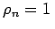
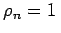

Inhalt Index DeskTop Bronstein

 Dynamische Systeme und Chaos Bifurkationstheorie, Wege zum Chaos Bifurkationen in Morse-Smale-Systemen Lokale Bifurkationen nahe einem periodischen Orbit
Dynamische Systeme und Chaos Bifurkationstheorie, Wege zum Chaos Bifurkationen in Morse-Smale-Systemen Lokale Bifurkationen nahe einem periodischen Orbit


Gegeben sei das System (17.17) mit und  . Betrachtet wird ein periodischer Orbit
. Betrachtet wird ein periodischer Orbit  von (17.17) bei
von (17.17) bei  mit den Multiplikatoren und . Das Bifurkationsverhalten der POINCARÉ-Abbildung nahe 0 wird durch die eindimensionale Abbildung (17.30) mit Ac = -1 beschrieben, von der die Normalform
mit den Multiplikatoren und . Das Bifurkationsverhalten der POINCARÉ-Abbildung nahe 0 wird durch die eindimensionale Abbildung (17.30) mit Ac = -1 beschrieben, von der die Normalform
angenommen werden soll. Die Ruhelage x = 0 von (17.32) ist für kleine stabil und für  instabil. Die zweite iterierte Abbildung hat bei
instabil. Die zweite iterierte Abbildung hat bei  außer x =0 noch die beiden stabilen Fixpunkte , die keine Fixpunkte von
außer x =0 noch die beiden stabilen Fixpunkte , die keine Fixpunkte von  sind. Demzufolge müssen sie Punkte der Periode 2 von (17.32) sein.
sind. Demzufolge müssen sie Punkte der Periode 2 von (17.32) sein.
Allgemein formuliert, kommt es in einer C4-Abbildung (17.30) zur Entstehung eines zweiperiodischen Orbits bei  , wenn folgende Bedingungen erfüllt sind (s. Lit. 17.2):
, wenn folgende Bedingungen erfüllt sind (s. Lit. 17.2):
| (17.77) |
Da wegen auch ist, sind damit für die Abbildung F2 die Bedingungen für eine Gabel-Bifurkation formuliert.
Die Eigenschaften der Abbildung (17.32) implizieren für die Differentialgleichung (17.17), daß sich bei  von
von  ein stabiler periodischer Orbit mit etwa doppelter Periode abspaltet (Periodenverdopplung), wobei
ein stabiler periodischer Orbit mit etwa doppelter Periode abspaltet (Periodenverdopplung), wobei  seine Stabilität verliert (s. Abbildung).
seine Stabilität verliert (s. Abbildung).
| Beispiel |
|
Die logistische Abbildung ist für durch , d.h. durch das zeitdiskrete dynamische System |
gegeben. Die Abbildung besitzt nach Lit. 17.9 folgendes Bifurkationsverhalten: Für hat (17.34) die Ruhelage 0 mit dem Einzugsgebiet . Für besitzt (17.34) die instabile Ruhelage 0 und die stabile Ruhelage , wobei letztere das Einzugsgebiet (0,1) besitzt. Bei wird die Ruhelage instabil und zerfällt in einen stabilen 2periodischen Orbit. Beim Wert wird auch der 2periodische Orbit instabil und durch einen stabilen 22-periodischen Orbit ersetzt. Die Periodenverdopplung setzt sich fort, und es entstehen stabile 2q-periodische Orbits bei . Numerische Untersuchungen belegen für die Konvergenz .
Bei liegt ein Attraktor F vor, der FEIGENBAUM-Attraktor, der die Struktur einer CANTOR-ähnlichen Menge hat. In beliebiger Nähe des Attraktors liegen Punkte, die nicht in den Attraktor, sondern auf instabile periodische Orbits iteriert werden. Der Attraktor F hat dichte Orbits und eine HAUSDORFF-Dimension . Andererseits liegt keine sensitive Abhängigkeit von den Anfangszuständen vor. Im Bereich existiert eine Parametermenge A mit positivem LEBESGUE-Maß, so daß für das System (17.34) einen chaotischen Attraktor positiven Maßes besitzt. Die Menge A ist von Fenstern durchsetzt, in denen Periodenverdopplung auftritt.
Das Bifurkationsverhalten der logistischen Abbildung ist auch in einer Klasse von unimodalen Abbildungen, d.h. von Abbildungen des Intervalls I in sich, die in I ein einfaches Maximum besitzen, zu finden. Obwohl die Parameterwerte , bei denen Periodenverdopplung auftritt, für verschiedene solche unimodale Abbildungen sich voneinander unterscheiden, ist die Konvergenzrate, mit der diese Parameter gegen den jeweiligen Wert streben, gleich: , wobei die FEIGENBAUM-Konstante ist (C hängt von der konkreten Abbildung ab). Gleich sind auch die HAUSDORFF-Dimensionen der Attraktoren F bei